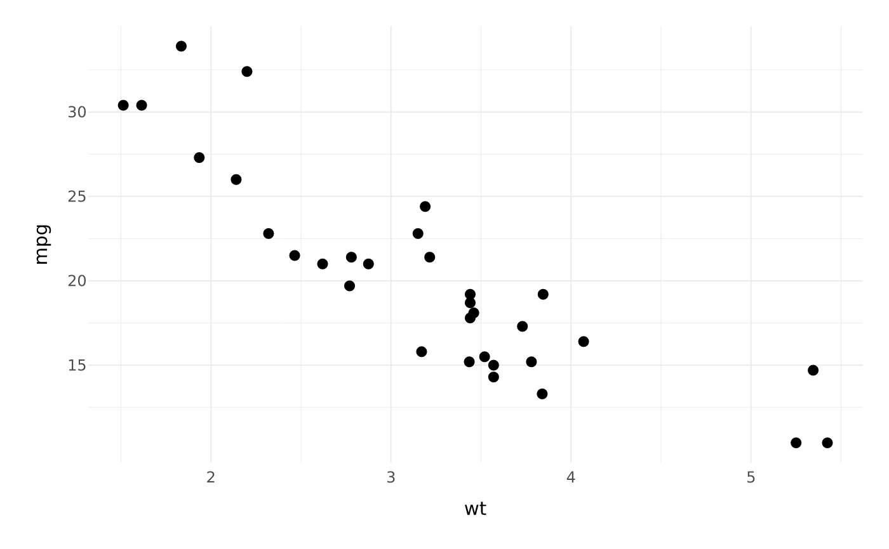
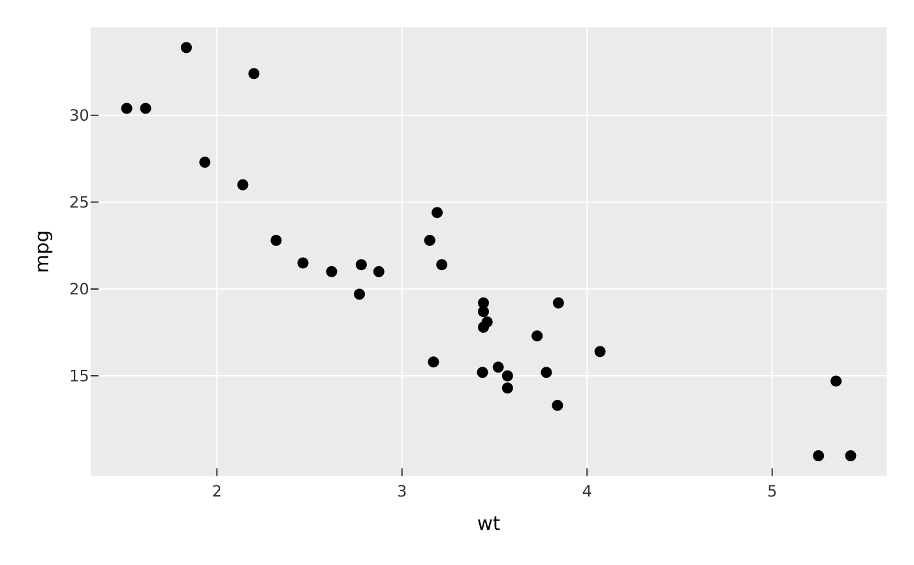

Control the non-data look of a plot. theme_gray() is the default (grey panel,
white gridlines); theme_minimal() drops the panel fill for light gridlines on
the page; theme_bw() is a white panel with light grey gridlines;
theme_classic() has axis lines and no gridlines; theme_void() strips
everything but the marks, legend, and titles; theme_cyberpunk() is a dark
neon theme (see Details).
Usage
theme_gray(plot)
theme_minimal(plot)
theme_bw(plot)
theme_classic(plot)
theme_void(plot)
theme_cyberpunk(plot)
theme(plot, ...)
set_theme(
plot,
panel_bg = NULL,
grid_col = NULL,
label_col = NULL,
strip_bg = NULL
)Arguments
- plot
A PlotSpec.
theme()also accepts aPlotComposition, setting the figure-level chrome (title bands, collected legend, panel spacing, tags).- ...
Named theme elements, e.g.
plot.title = element_text(size = 16),panel.grid.minor = element_blank(), or settings likelegend.position, one of"right"(default),"left","top","bottom", or"none". Legend geometry is tunable vialegend.key.size(key/swatch side, mm),legend.spacing(gap between stacked guides, mm), andlegend.margin(inset around the legend block, one or four millimetres,t, r, b, l).- panel_bg, grid_col, label_col, strip_bg
Colours (or
NAto draw nothing) for the panel background, gridlines, axis-label/legend text, and facet strip background.
Value
The modified PlotSpec.
Details
theme() overrides individual elements on top of the current theme using
element_text() / element_line() / element_rect() / element_blank().
set_theme() is a small back-compatible shortcut for the most common colours.
theme_cyberpunk() sets a dark canvas with dim neon gridlines and a bright
neon default palette (both discrete and continuous), in the spirit of
mplcyberpunk. It pairs with the
glow() layer effect and linear_gradient() fills for the full neon look;
the palette is only a default, so scale_* overrides still win.
Examples
vplot(mtcars) |> mark_point(x = wt, y = mpg) |> theme_minimal()

vplot(mtcars) |>
mark_point(x = wt, y = mpg) |>
theme(panel.grid.minor = element_blank(), legend.position = "none")
